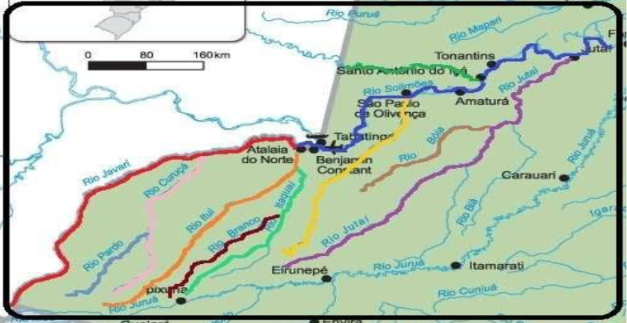

Clima e Demografia
Tabatinga possui clima equatorial (quente e úmido) e abriga uma população de 71.317 habitantes (IBGE, 2022). A cidade é totalmente envolvida pela natureza densa da floresta amazônica.
Clique para mais informações →Guia Prático de Orientação e Sobrevivência na Amazônia
Localizada no Alto Solimões, Tabatinga não é apenas um ponto no mapa, mas o epicentro onde o Brasil se une à Colômbia e ao Peru. A região abrange mais de 200.000 km² e 2.300 milhas navegáveis sob a jurisdição da Capitania Fluvial de Tabatinga (CFT), em meio à selva amazônica e a uma hidrografia complexa onde os rios Solimões e Javari atuam como as verdadeiras rodovias locais.
Culturalmente, a fronteira é uma explosão de diversidade que mistura idiomas e saberes. A convivência fluida de brasileiros, colombianos e peruanos se entrelaça com as raízes de povos originários, como os Tikuna, Omáguas, Cocama, Marubo e Canamarí. Celebrações como o Festival Tribal do Alto Solimões (com a disputa folclórica entre a Onça Preta e a Onça Pintada) e a rica gastronomia à base de peixes como o pirarucu e tambaqui marcam a alma da região.
A logística do município impõe desafios únicos de adaptação. Inexistindo estradas que liguem a cidade a Manaus, o acesso depende quase exclusivamente do transporte fluvial (que pode levar até 7 dias) ou aéreo. Diante deste cenário de isolamento terrestre e livre trânsito nas fronteiras, a Marinha do Brasil atua na região com o tríplice propósito de garantir a segurança da navegação, a prevenção da poluição hídrica e a imprescindível salvaguarda da vida humana.

Informações fundamentais e orientações de sobrevivência, mobilidade e logística na região da Tríplice Fronteira.
Tabatinga possui clima equatorial (quente e úmido) e abriga uma população de 71.317 habitantes (IBGE, 2022). A cidade é totalmente envolvida pela natureza densa da floresta amazônica.
Clique para mais informações →O transporte mais tradicional é o "motorkar" (tuk-tuk). Ao atravessar a fronteira (Avenida da Amizade) para a Colômbia, entra-se em Letícia, onde a rua vira Carrera 6 e o sistema de endereços passa a usar numerações lógicas cruzando "Calles" (Leste-Oeste) e "Carreras" (Sul-Norte).
Clique para mais informações →A segurança e saúde contam com a atuação conjunta de órgãos federais. A rede inclui a CFT, o Comando de Fronteira Solimões (8º BIS), a Polícia Federal, o Hospital de Guarnição de Tabatinga (HGuT) e a Vila Naval.
Clique para mais informações →A região oferece excelentes pontos turísticos como o Mirante da Comara (dono da vista mais linda para o pôr do sol), o Parque Zoobotânico e as feiras locais. É importante, contudo, evitar áreas sinalizadas pela Marinha como "locais não recomendados" para militares, como o Bar Lua Nova.
Clique para mais informações →O comércio e a gastronomia local refletem a rica integração cultural. Desfrute da culinária regional (peixes amazônicos) e da cozinha colombiana na fronteira.
Clique para mais informações →A operadora Veloso NET oferece combos residenciais de fibra óptica e pacotes móveis 5G/4G (Chip Fácil). Conectividade estável em Tabatinga e no Amazonas.
Clique para ver planos e contratar →A NPCF-T (1ª Edição, 2025) estabelece as diretrizes de segurança do tráfego aquaviário, dotações de salvatagem e restrições de navegação nos rios da jurisdição.
Clique para ver o resumo e baixar →Para apoio, a instituição atende via Sala de Estado (92 2123-4547), OSE (97 99146-3228) e Expediente Geral (97 3412-2980). Endereço: Rua Duarte Coelho, 143 – Portobrás.
Consulte a lista detalhada e contatos rápidos de alimentação, comércio, lazer e transporte na Tríplice Fronteira.
Presença de agências físicas do Banco do Brasil, Caixa Econômica Federal e Bradesco em Tabatinga para saques e operações bancárias.
Inexistência de aplicativos tradicionais de transporte (como Uber/99). Predominância de mototáxis e táxis locais. Combine o valor da corrida previamente.
O comércio em Tabatinga funciona geralmente de segunda a sábado, das 08h às 18h. Planeje suas compras de mercado dentro desse expediente.
Circulação de Real (BRL) no lado brasileiro e Peso Colombiano (COP) em Letícia. Recomenda-se portar dinheiro em espécie para pequenas despesas.
A fronteira terrestre é de livre trânsito, mas é obrigatório portar sempre um documento oficial de identificação com foto ao deslocar-se para Letícia (Colômbia).
Clima quente e úmido constante durante o ano todo. Mantenha hidratação constante, use protetor solar e repelente contra insetos.
A operadora regional oferece planos de fibra óptica e internet móvel (4G/5G) com excelente cobertura na Amazônia. Clique para ver planos, recargas e como contratar.
Ver planos e passo a passo →Vídeo institucional com belas tomadas aéreas e fluviais da Amazônia, apresentado em formato de guia prático da Tríplice Fronteira. A produção ilustra o contexto amazônico onde os rios são rodovias, detalha a vasta jurisdição de mais de 200 mil km² da Capitania Fluvial de Tabatinga, dá dicas de orientação em Letícia (Colômbia), sugere pontos gastronômicos e turísticos, alerta sobre medidas de segurança e exibe os contatos da atual liderança da CFT para 2026.
Consulte a documentação completa em PDF para ter acesso off-line a todas as diretrizes e contatos.